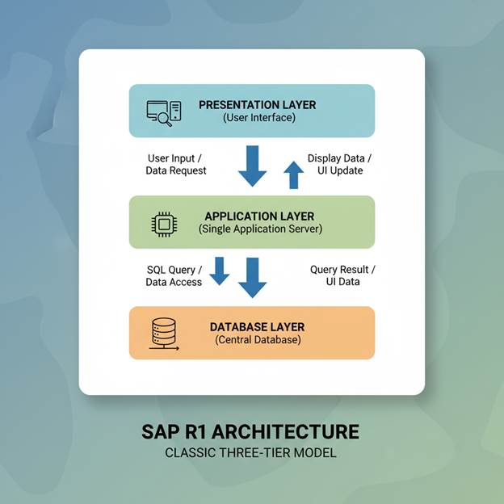
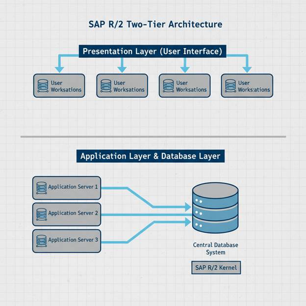
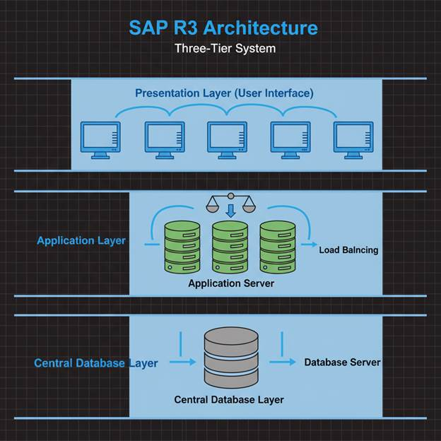

LESSON 2 : What is SAP & SAP’s ERP
Hey Folks! Welcome to the next chapter!
I hope you’ve already gained a solid understanding of ERP and its real-world applications from the previous lesson. Now, let’s dive into our main concept!
In this lesson, you’ll learn the complete basics of SAP and its ERP system.
The topics we’re going to cover today are:
➔ What is SAP?
➔ SAP ERP and its Version History
➔ SAP R/3 and its Architecture
➔ IDES R/3
SAP stands for Systems, Applications, and Products in Data Processing
Think of SAP as a giant digital brain that helps big companies manage all their business activities in one place.
Imagine you run a large store. You need to:
• Keep track of what products you have
• Manage your money and payments
• Handle employee information
• Process customer orders
• Plan what to buy next
Instead of using separate notebooks or systems for each task, SAP combines everything into one powerful system. It's like having one master control room that connects all parts of your business
• Integration: All business parts work together seamlessly
• Real-time data: Information updates instantly across all departments
• Standardization: Same processes used everywhere in the company
• Global reach: Used by companies worldwide
• Scalability: Grows with your business needs
As we’ve already discussed what ERP is, its usage, and the organizations that provide ERP tools, it’s worth noting that SAP’s ERP stands out as the most popular due to its rich functionality and widespread adoption.
SAP ERP is the main software that connects all business departments:
• Finance and Accounting
• Human Resources
• Manufacturing
• Sales and Marketing
• Supply Chain Management
This section isn’t meant for memorization; it’s intended to help you understand and appreciate how this tool was created and evolved over the years into one of the industry’s best solutions.
Phase 1: The Beginning (1970s-1980s)
• 1972: SAP founded in Germany by five engineers
• 1973: SAP R/1 released - the first version, very basic
• 1979: SAP R/2 launched - worked on mainframe computers (big, expensive machines)
Phase 2: The Revolution (1990s)
• 1992: SAP R/3 launched - the game changer!
• This was revolutionary because it used client-server technology
• Companies could use regular computers instead of expensive mainframes
• Introduced the famous 3-tier architecture
Phase 3: Internet Era (2000s)
• 2004: SAP ECC 5.0 (Enterprise Central Component)
• 2005: SAP ECC 6.0 - most popular version for many years
• Added web-based features and better user interfaces
• Introduced NetWeaver platform for integration
Phase 4: Modern Era (2010s-Present)
• 2015: SAP S/4 HANA launched - the current flagship
• Built for the digital age with real-time processing
• Uses in-memory database for lightning-fast performance
• Cloud-ready and mobile-friendly
Before we dive into the R/3 architecture, let’s first take a look at R/1 and R/2 for better visibility and understanding.
Here, you’ll come across three key layers: Presentation Layer, Application Layer, and Database Layer. Let’s understand each of them in simple terms:
●
Presentation Layer:
Imagine a customer walks into your shop and makes a purchase. To record this,
you use a user interface (UI) where you enter the sales details. This
interface is the presentation layer—it’s where you interact with the system.
●
Application Layer: Once
the system receives your input, it processes the information. For example, it
might calculate taxes, update stock levels, or apply business rules
related to the products. This is the application layer—the brain that processes
and manages your data.
● Database Layer: Finally, all the processed information needs to be stored safely for future use. This happens in the database layer, which acts as the storage system where all your records are maintained
Let’s move to the Architecture Concept
SAP R/1 Architecture:
● Introduced in the 1970s (SAP’s very first ERP system).
● “R” stands for Real-time data processing.
● 1-tier architecture → Everything (presentation, application, and database) ran on a single system/server.
● Mainly used for financial accounting.
Limitation: Very basic, lacked flexibility and scalability, suitable only for small businesses at that time.

SAP R/2 Architecture
● Introduced in the 1980s.
● 2-tier architecture → Database + Application logic ran on a mainframe system, and presentation was through terminals.
● Supported multiple languages and currencies, making it suitable for large enterprises.
● Strong in batch processing and transaction handling.
Limitation: Worked only on mainframe computers, not very user-friendly, and lacked the flexibility modern systems needed.

SAP R/3 was the breakthrough version that made SAP famous worldwide. The "R" stands for "Real-time" and "3" represents the three-tier architecture.[2]
Why R/3 Was Revolutionary
Before R/3, business software was:
• Expensive and complex
• Required huge mainframe computers
• Difficult to customize
• Limited to large corporations
R/3 changed everything by making enterprise software accessible to more businesses.
The SAP R/3 architecture can be thought of as a three-story building. The first floor is the Presentation Layer, where users interact with the system through the SAP GUI—entering data, viewing reports, and using forms or menus. The second floor is the Application Layer, the brain of the system, which processes business rules, calculations, and validations. For example, when a sales order is created, this layer checks inventory, calculates prices, and updates records. Finally, the third floor is the Database Layer, where all company data—such as customer details, product information, and financial records—is securely stored using technologies like Oracle or Microsoft SQL Server.
These layers work together seamlessly: the user enters an order, the application layer processes it, the database layer saves it, and the confirmation is shown back to the user. This design makes the system flexible, scalable, and reliable.
Below diagram will help you to get a picture about How R/3 Architecture works.

After R/1 and R/2, SAP introduced R/3, which was a 3-tier client/server architecture (Presentation, Application, Database) and became a game-changer in ERP.
IDES stands for Internet Demonstration and Evaluation System. Think of it as SAP's "practice playground" - a complete, ready-to-use company setup that you can experiment with.
What IDES Contains
IDES is like a virtual company called "IDES AG" with:
• Realistic business data: Customers, suppliers, products, employees
• Complete processes: From taking orders to delivering products
• Multiple industries: Manufacturing, retail, services
• Global operations: Multiple countries and currencies
• Sample transactions: Thousands of realistic business examples
Why IDES is Important for Beginners
1. Safe Learning Environment
• Practice without fear of breaking anything
• Make mistakes and learn from them
• Experiment with different scenarios
2. Real Business Scenarios
• See how actual companies use SAP
• Understand complete business processes
• Learn industry best practices
3. Training and Certification
• Most SAP training courses use IDES
• Certification exams reference IDES scenarios
• Consistent learning experience worldwide
IDES Company Structure
The imaginary IDES company includes:
• Headquarters: Germany
• Subsidiaries: USA, UK, France, and others
• Business areas: Manufacturing, trading, services
• Products: Motorcycles, pumps, high-tech equipment
• Departments: Sales, purchasing, finance, HR, production